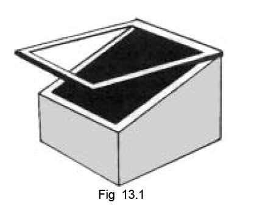
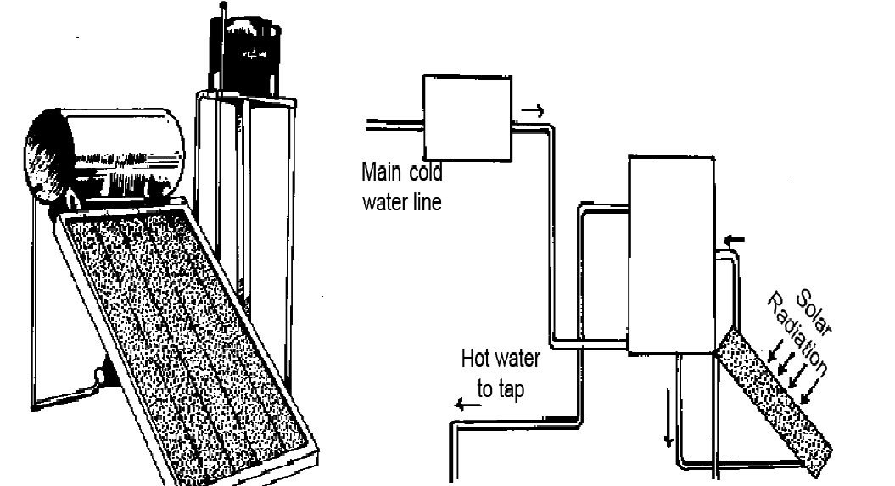

Solar energy is the radiant energy that we receive from the sun in the form of heat and light. Infact, it is an inexhaustible source of energy for us. It is the ultimate source of most of the sources of energy that we use today. The wind energy, the water energy, energy of fossil fuels and the energy in food are all due to solar energy.
The sun has been providing us with its heat and light. It was only recently
that the real source of the sun’s energy became known.
The discovery of radioactivity towards the end of the 19th century, led
some scientists to suggest that the energy released during radioactive decay
of radioactive materials in the sun, might be the source of solar energy. The
liberation of energy in this process being extremely slow, the hypothesis had
to be rejected.
Some scientists considering the temperatures exising in the solar interior,
suggested by about 1929 that thermonuclear reactions could be the source
of solar energy. This can explain the observed radiation from the sun. The most
convincing explanation was provided by Hans Bethe and C.von Wiezsacker
in1939. Bethe suggested that the nuclear reactions in which hydrogen nuclei
fuse to form helium nuclei is the source of solar energy. This is true for other
stars also. In this process enormous amount of energy is released.
The rate of decrease in the mass of the sun is calculated to be about 4 million tonnes
per second. Every square metre area of the earth’s upper atmosphere receives nearly
1.4 kJ of solar energy per second. Only 50% of this reaches the earth’s surface. The
total energy radiated per second by the sun is 4 x 1026 J. This corresponds to the fusion
of a mass of 2 x 1019 kg of hydrogen per year.
Reactions in the sun : There are two different cycles of processes. One is
the proton-proton chain and the other is the carbon cycle. In p-p chain four
hydrogen nuclei fuse into one helium nucleus with the liberation of energy. In
the carbon cycle, the carbon atom acts as a nuclear catalyst. These two cycles
account for sun’s energy.
Many of the useful sources of energy come from the natural transformation
of solar energy.
Wind energy : Solar energy heats the air near the earth. The hot air becomes
lighter and this air rises up. This results in a low pressure area. Cooler air flows
into this region giving rise to wind. Thus wind energy is due to solar energy.
Wind energy is harnessed for many useful purposes such as production of
electricity, sailing of boats etc.
Water energy : Solar energy causes water to evaporate from water bodies. The
water vapour rises to form clouds and the clouds bring rain. The rain water flowing
downhill possesses kinetic energy. This energy can be used to generate electricity.
Thus water energy is also due to solar energy.
Energy in food : Plants use the solar energy for producing food for their
sustenance. This food due to solar energy maintains every form of life on earth.
Energy of fossil fuels : The fossil fuels are formed when living things get
embedded in the earth’s crust and undergo chemical change. Life forms are
due to solar energy. Thus fossil fuels are also due to solar energy.
Solar devices : The devices used to harness solar energy are called solar energy devices or solar devices. Solar devices can be broadly classified into two types based on the principle of working. In one type of device, the solar energy is collected in the form of heat. Eg. solar cookers and solar water heaters. In the other type, solar energy is converted into electricity. Eg. solar cell.
(a) Solar cooker : Solar cooker is a simple device for cooking food. It is made of a wooden box or heat resistant material. The inside of the box is painted black. The box is covered with a transparent plate of glass (Fig 13.1). A plane mirror is fitted to the inner surface of the lid of the box. Food to be cooked is taken in a metal container. It is placed inside the box. The cooker is placed such that sun’s rays are incident directly on the mirror. The mirror reflects the solar radiation onto the container. This raises the temperature of the food and the food gets cooked. The black paint on the inside walls of the box and the outer surface of the container ensures better absorption of solar energy. The glass plate does not allow heat energy to flow out of the box. Thus heat energy, trapped inside the box, is utilised in cooking food.
(b) Solar water heaters : Solar water heaters are designed on the same principle as the solar cookers. In solar water heaters, a copper pipe with its outer surface painted black, is fixed in the form of a coil in a box similar to that of a cooker [Fig 13.2(a)].
Bending copper pipe as a coil, helps to increase the area for absorption
of solar energy. A reservoir kept at a higher level stores water. This is connected
to a small cylindrical tank, kept at a slightly higher level above the heater. One
end of the copper pipe is connected to the bottom of the small tank with the
other end connected near its middle. Schematic arrangement of the heater is
shown in Fig 13.2(b).
Water from the tank flows
continuously through the pipe. The
water absorbs heat and gets heated up.
Hot water remains in the upper portion
of the tank and this can be drawn
through a tap. Cold water from the
reservoir tank replaces the hot water
drawn.
(c) Solar cells : The devices that convert solar energy directly into electrical energy, are called solar cells. The first practical solar cell was fabricated in 1954. A typical solar cell consists of a small piece (2 sq cm area) of light absorbing material like silicon. Solar energy entering silicon releases electrons from silicon atoms to produce electricity. The voltage produced is just about 0.5 V and power (a) Fig 13.2 (b) produced is 0.7 W. To obtain higher voltage and power, a large number of cells are connected in series. This arrangement of cells is known as solar panel. Inspite of low efficiency and high cost (Pure silicon is required for efficiency), solar cells are being used for many purposes. They are the main source of energy in artificial satellites. They are used as a source of electricity for radio or wireless transmission, at TV relay stations, traffic lights and research centres in remote areas. They may be viewed as the future source of electricity for domestic purposes.